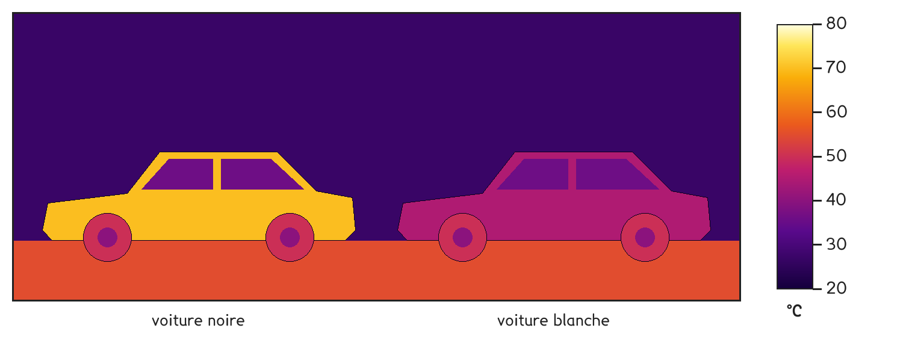
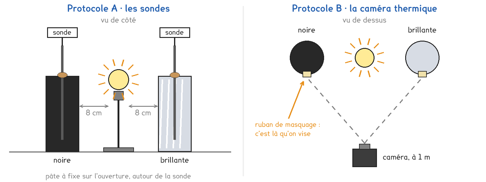
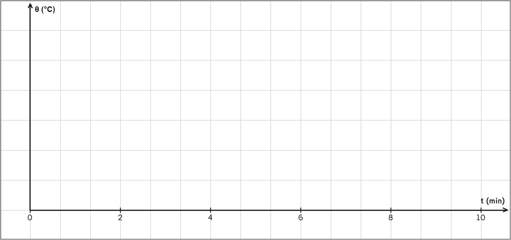

Tle Bac Pro · toutes spécialités · TP commun CT-07
Pourquoi un objet noir chauffe-t-il plus qu'un clair au soleil ?
3 figures
Sujet. En plein été, deux voitures sont garées côte à côte sur un parking depuis midi. Le toit de la noire brûle la main, celui de la blanche se touche sans peine. Une caméra thermique a photographié la scène.

Problématique : pourquoi un objet noir chauffe-t-il plus qu’un clair au soleil ?
Au laboratoire, une lampe remplace le soleil, et deux canettes vides et fermées les voitures : l’une peinte en noir mat, l’autre entourée d’aluminium brillant.
a) Sur l’image de la caméra, relever la température de chaque surface avec l’échelle.
| La surface | la voiture noire | la voiture blanche | le sol |
|---|---|---|---|
| Température lue (°C) | …………… | …………… | …………… |
Document. Tout objet émet un rayonnement thermique. Aux températures de la vie courante, c’est de l’infrarouge, invisible à l’œil. Au-delà de 500 °C environ, une partie devient visible : rouge sombre, puis blanche vers 2 500 °C, dans le filament d’une ampoule.
b) D’après le document, entourer ce qu’émet chaque objet.
| L’objet | Température | Il émet, entourer |
|---|---|---|
| la main | 33 °C | infrarouge seul · infrarouge et visible |
| le toit de la voiture noire | …………… °C | infrarouge seul · infrarouge et visible |
| le filament d’une ampoule | 2 500 °C | infrarouge seul · infrarouge et visible |
Deux protocoles répondent à la même question, sous la même lampe : une partie de la classe prend A, l’autre prend B, et on compare à la fin.

Protocole A · les sondes. Une sonde traverse le bouchon de pâte à fixe de chaque canette. On relève la température de l’air enfermé toutes les minutes pendant dix minutes.
Protocole B · la caméra thermique. Sans rien toucher, la caméra vise un carré de ruban collé sur chaque canette. On relève la température de la surface au même rythme.
Les deux protocoles finissent par le même essai : une plaque de verre, puis un film plastique, entre l’appareil et une main.
c) Compléter le tableau pour comparer les deux protocoles.
| Protocole A | Protocole B | |
|---|---|---|
| On mesure la température… | de …………………………… | de …………………………… |
| Il faut toucher la canette | oui · non | oui · non |
| Une limite | …………………………… | …………………………… |
Le choix se fait maintenant, avant de toucher au matériel.
d) Quel protocole prenez-vous ? Justifier en une phrase.
Le professeur peut vous imposer celui qui reste disponible.
Je prends le protocole ……… parce que ……………………………………………………………………
e) Avant de mesurer, faire deux hypothèses. Entourer.
La noire gagnera plus · autant · moins que la brillante.
Le verre laisse passer · arrête l’infrarouge.
Avant de commencer
L’ampoule dépasse 100 °C : on ne la touche pas, on ne déplace pas la lampe allumée.
Les deux canettes sont à 8 cm de l’ampoule, mesurés au réglet avant d’allumer.
Aucun liquide sur la paillasse : la lampe est branchée sur le secteur.
f) Schématiser votre montage vu de dessus, avec ses deux distances.
Le schéma se dessine sur la feuille du TP.
g) Relever les températures. Une ligne par canette.
| t (min) | 0 | 1 | 2 | 3 | 4 | 5 | 6 | 7 | 8 | 9 | 10 |
|---|---|---|---|---|---|---|---|---|---|---|---|
| Noire, θ (°C) | |||||||||||
| Brillante, θ (°C) |
Le tracé se fait pendant les relevés, entre deux mesures.
h) Graduer l’axe des températures, 1 cm pour 2 °C, puis tracer les deux courbes θ(t).

i) Viser une main, nue puis derrière chaque matériau. Relever.
| Entre la main et l’appareil | rien | la plaque de verre | le film plastique |
|---|---|---|---|
| Température lue (°C) | …………… | …………… | …………… |
| B · la main se voit | oui · non | oui · non | oui · non |
j) Calculer le gain de chaque canette en dix minutes.
Votre hypothèse de la question e est-elle confirmée ?
Noire : ……… − ……… = ……… °C Brillante : ……… − ……… = ……… °C
k) Comparer avec un groupe de l’autre protocole : même classement ?
Pourquoi ses valeurs ne sont-elles pas exactement les vôtres ?
l) Quel matériau arrête l’infrarouge, le verre ou le film ? Justifier par l’essai i.
m) Répondre à la problématique en deux phrases.
Ce que ce TP a établi, et qui vaut pour tout objet au soleil :
À RETENIR
Tout objet émet un rayonnement thermique : de l’infrarouge aux températures de la vie courante, visible seulement au-delà de 500 °C environ.
Un objet qui reçoit un rayonnement en absorbe une partie et s’échauffe. Une surface noire et mate absorbe presque tout ; une surface brillante réfléchit presque tout et s’échauffe peu.
Le verre laisse passer la lumière visible mais arrête l’infrarouge. Un film plastique fin le laisse passer.
La lumière du soleil traverse les vitres et chauffe les sièges. Les sièges émettent alors de l’infrarouge, que les vitres ne laissent pas ressortir. Entourer la température que peut atteindre l’intérieur d’une voiture fermée, par 30 °C à l’ombre :
35 °C · 60 °C · 150 °C
Comment s’appelle ce piège à infrarouge, qui existe aussi à l’échelle de la Terre ?
TP commun de physique-chimie, toutes spécialités. Le travail se fait sur la feuille du TP : cette page en est la version à l'écran, sans les lignes à remplir. Rien n'est enregistré.